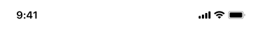

模式示例
375 宽示例，可在预览内滚动、操作；示例数据为虚构。
端到端示例
只依据 Skill 资料从需求生成的完整页面，用来验证模式与规则；可在预览内操作。

全部模式
AI 按“需求关键词”匹配模式，再检查“不适用”；一个应用通常由多个模式组合（一级页 + 二级页）。
| 模式 | 页面类型 | 用途 | 需求关键词 | 不适用时 |
|---|---|---|---|---|
| 工作台首页workbench | 一级入口 / 首页 | 汇总待办、经营指标、当日任务与常用功能，从这里进入各业务 | 工作台、首页、我的工作、团队长首页、业务首页 | 只有单一列表的首页 → list-filter；纯数据大屏 → 不适用 |
| 列表 + 搜索 / 筛选list-filter | 对象列表 | 浏览并定位一组同类对象，再进入详情 | 列表、客户列表、产品列表、查询、搜索 | 少于约 8 项且无需查找 → 直接用 ListBar 或卡片；需要批量勾选处理 → batch；按日期浏览 → records |
| 详情 + 底部操作detail | 对象详情 | 查看单个业务对象并在页内完成状态更新或审批 | 详情、审批、工单、需求详情、拜访详情 | 纯阅读文章 → markdown 组件的文章页 |
| 分组表单提交form | 录入 / 提交 | 一次提交多组信息 | 新建、上报、打卡、填写、申请 | 只有 1–2 个字段的验证类页面 → login |
| 日历 + 记录时间轴records | 按日期浏览记录 | 按日期查看带时间的记录与分布 | 日历、日程、拜访记录、活动排期、按日查看 | 只按时间倒序浏览 → list-filter |
| 批量处理列表batch | 待办批量处理 | 逐条勾选后统一处理 | 批量、待提醒、待审批、待分配、超时关注 | 不需要批量操作 → list-filter |
| 登录login | 登录入口 | 首次进入或退出后重新登录 | 登录、验证码、快捷登录、手机号登录 | 多租户 / 企业账号选择 → 登录后在“我的”中处理 |
数据在哪里
模式的完整定义以数据形式保存在 Skill 中，网页不再逐一展示。
references/patterns/page-pattern-metadata.json：匹配关键词、不适用、骨架、必需组件、状态、交互、关联页面生成规则（AI 选模式时读取）references/patterns/<模式>.md：骨架表、状态表与已确认取值references/page-rules.md：设计方审查沉淀的页面生成规则，优先于组件规则preview/patterns/<模式>/<模式>.js：示例页面脚本（组件写法全部由组件模板渲染）